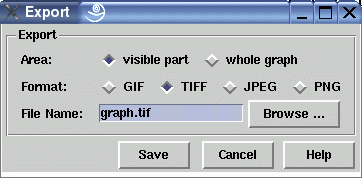

Export Dialog Window
This dialog window is used to set options and target before exporting the current graph in the image file formats GIF, TIFF or PNG.
In order to use the export feature, it is necessary to have an open uDraw(Graph) base window which must not be covered by other windows. When using the export, uDraw(Graph) tries to raise the base window to bring it in front of all other windows (on Windows® platforms this might fail due to restrictions of the operating system). The export does not work when the base window is iconified or when uDraw(Graph) operates in the background without a user interface directly after starting the system with commandline option -nogui. Make sure that the base window is visible in the front if you experience any problems with export.
Dialog Elements of the Export Window
-
Area
Specifies which portion of the graph has to be saved, either the exact part that is currently visible in the base window where this dialog has been invoked or the whole graph. Be careful that saving the whole graph may take some time and may create huge files, especially for very large graphs. When saving the whole graph, uDraw(Graph) automatically scrolls to each area. Please do not use the user interface until the end of the saving operation which is displayed in the status line of the base window. -
Format
Specifies the image format of the export file, either GIF, TIFF (uncompressed) or PNG. -
File Name
The name of the image file has to be specified here. A reasonable name is given by default. File Names without a leading path are stored in the directory where uDraw(Graph) was started. Either type the file name directly into this field or use the file browser for more convenience by pressing the browse button. The file browser is similar to the one used to save a graph. -
Save
Push button to save the graph in the file specified in field "File Name". -
Cancel
Push button to close the export dialog without performing any action. -
Help
Push button to start the online help system with this page.
Instead of LZW compression, the run-length encoding of Hutchison Avenue Software Corporation is used, also known as miGIF compression. The miGIF compression routines do not, strictly speaking, generate files conforming to the GIF spec, since the image data is not LZW-compressed (this is the point: in order to avoid transgression of the Unisys patent on the LZW algorithm.) However, miGIF generates data streams that any reasonably sane LZW decompresser will decompress to what we want.